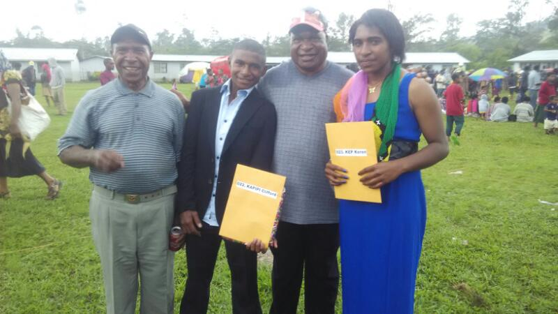

The live of a CIS officer is more of a prisioner, being a CIS officer is one of the toughest jobs in PNG, where you will have to rehabilitate adults and out laws to be a good citizens of this nation when they serve their time in prision. I was fortunate to born, and raised on that kind of place, because life wasn't that easy.
I am from Southern Highlands, but i was born and raised up in Mt. Hagen. My father worked in Mt. Hagen as a CIS officer for almost thirty (30) years. Started my early education at a Christain Academy at 2009, there I completed my pre-school for another two years, graduated and further my Studies at Baisu Primary for further 6 years, graduated at 2016. 
Figure 1.0 A Family photo after the graduation ceremony
I was privilege to be selected to one of the top performing schools in the country, non other than Mt. Hagen secondary. Completed my grade ten there around 2018 and was selected to continue there for my senoir high school. I was struggling with my academic performances on the first term because in order for me to go to the BLOCK SCIENCES class I need to score above average, at least a minimum of A's and B's in in all the science subjects ( Advance Maths, Biology, Physics, Chemistry, Geography and Language and Literature) which I never scored that gradings on the first term so I don't want to be streamed into other science departments so I switch courses to Business Studies. Business studies was okay, it was interesting. I successfully completed my eleventh grade at 2019, with good grades though I struggled at the first assessment period.
With only three weeks as a senior high school student, I was so happy that this was the last year of my high school life, but that feeling was just a fantasy. It was the 24th of Feburary 2020, a mass breakout occured back at home (Baisu Jail) of 103 inmates break free leaving eight (8) inmates confirmed dead, 8 seriously wounded and 28 was rearrested. that jail breakout changes everything (Mass Breakout), we (correctional officer's dependents) couldn't move around, because we were the targets of the relatives of the deceased prisioners. With that situation we couldn't attend attend classes anymore, we all decides to witdhdraw from school after one of our big brother was murdered on the heart of Mt. hagen as a revenge for their related that was gunned down. Although my other brothers and sisters becoming a victim of our father's actions, all of them withdrew except for me. I transferred to Mendi Secondary to do my 12th grade but was not successful because I cannot bring my marks from other school to other school so i was forced to grade 11 again. I agreed but this time switch back to Science and took block science in doubt of the business studies teachers there. There I made my way to the Premier university of the South Pacific for my SFY. Oh SFY is just one of the toughest year of my entire education journey, all of my hopes for going into the medical faculty died on the very first semester of my first year. I was lucky enough to be seleted on one of the best course in the university, because we are advancing with technology and this world needs more IT specilists. This is the end of my education journey.
| SCHOOL | PROVINCE | YEAR |
|---|---|---|
| Baisu Christain Academy | Western Highlands Province | 2009-2010 |
| Baisu Primary | Western Highlands Province | 2011-2016 |
| Mt Hagen Secondary | Western Highlands Province | 2017-2021 |
| Mendi Secondary | Southern Highlands Province | 2017-2021 |
| UPNG (SFY) | National Capittal District | 2022-2024 |
| UPNG (MSCS~SNPS) | National Capital District | 2017-2021 |
TAble 1.0 shows the timline pf my education from Ace up to University.